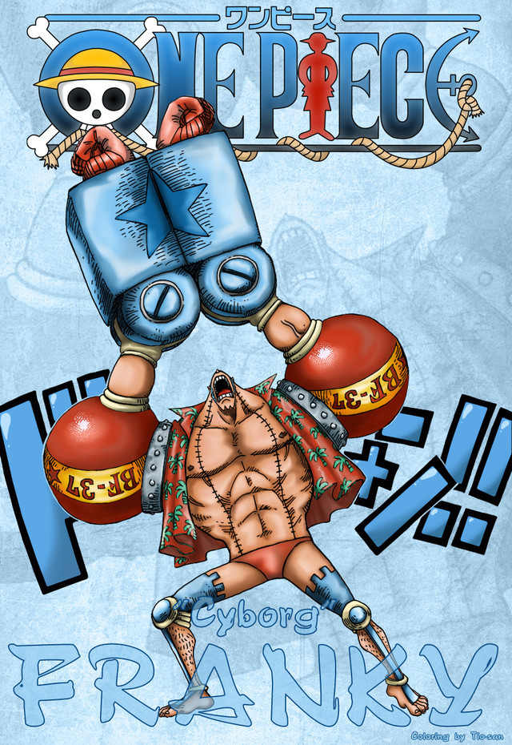

“改造人”弗兰奇（フランキー/Franky）
初次登场：漫画第329话
本名：卡迪·佛兰姆
年龄：34岁→36岁
生日：3月9日
血型：XF型
身高：225cm→240cm
故乡：南海
身份：汤姆工作室学徒→水之都“弗兰奇之家”老大→草帽海贼团船工
喜欢的食物：汉堡包，炸薯条，搭配可乐的食物
特长：不光是修船技术高超，还懂建筑。除背后浑身上下都是武器（因为自己够不到后背）。
梦想：制造出梦想之船，在Sunny号完成后，想看到自己制造的船到
达世界尽头而加入路飞一行。
悬赏：4400万（司法岛事件）→9400万（德雷斯罗萨篇）
性格豪放，喜欢唱歌，跳奇怪的舞，下身喜欢只穿一条短裤。身为改造人的弗兰
奇，身体藏着各种兵器。弗兰奇在被CP9抓入司法岛的过程中被路飞他们救罗宾
的精神所感动，义无返顾的站在路飞他们一边。司法岛事件结束后，弗兰奇用宝
树亚当的材料建造了一艘梦想之船，取名“桑尼号（即万里阳光号）”，并赠送给
草帽海贼团。后来在路飞的邀请下进入了草帽海贼团。 弗兰奇本来是想制造出
梦想之船，但“桑尼号”完成后，只想看到自己制造的船能到达世界尽头。